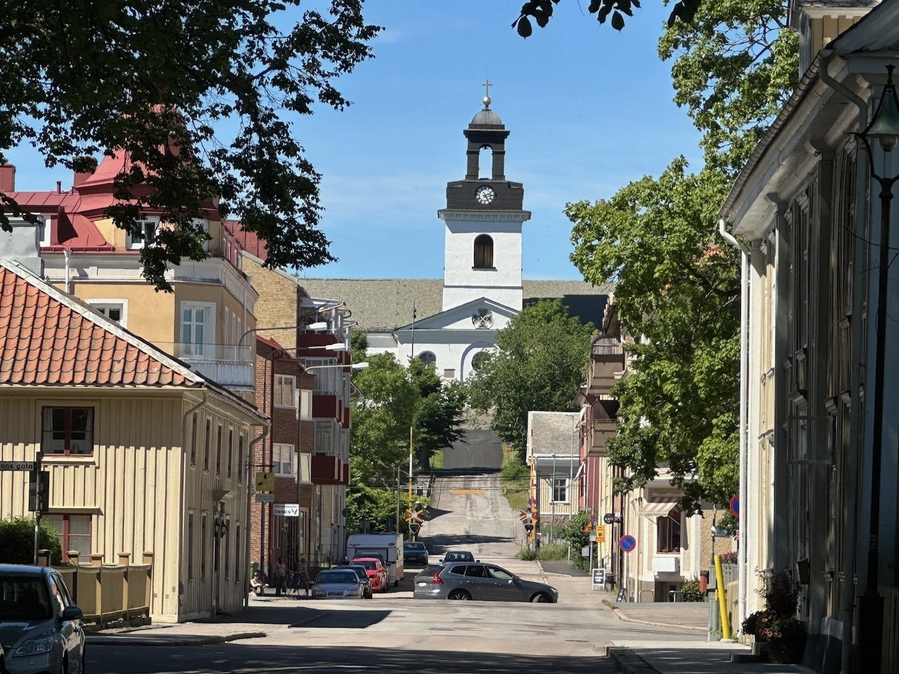
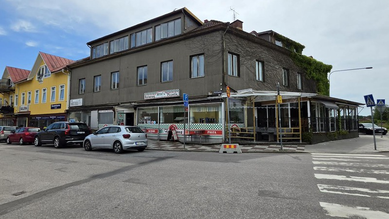

Jeg er en person som ikke drar ofte på reiser veldig langt utenfor indre østfold eller Oslo området, men det var en gang jeg ble med en kompis for å være i sverige i en uke, et sted som heter Åmål.
Jeg var litt skeptisk men også litt spent for hvordan byen var og hvordan det så ut, skal jeg være ærlig så var jeg litt redd for å være ute i mørket på byen der, men det var veldig hyggelig. Vi syklet rundt og hørte på musikken som spilte, siden det også var en bluesfestival der den uken.
Vi dro opp på taket til et par pensjonister og satt der og snakket og hygget oss og syklet videre og kjøpte mat og snacks, en av de andre dagene var vi på badeland som var mye billigere enn i Norge, jeg tør nesten å påstå at det var bedre enn mange av de jeg har vært på.
Alt i alt, så mener jeg at denne reisen var definitivt verdt det og Åmål anbefales definitivt å besøkes.
Dette var definitivt en ting jeg gledet meg til som fan av bluesmusikk
Dette var en spontan ting som skjedde, men jeg er glad for at vi dro dit allikevel.
Byen var veldig koselig, var veldig mange fine utesteder og hyggelige folk og det var relativt lett å komme seg rundt, spesielt på sykkel.

Dette er bilde av en gate som jeg husker å ha syklet oppover på kvelden.

Her spiste jeg og vennen min mye pizza og kebab i løpet av uka.